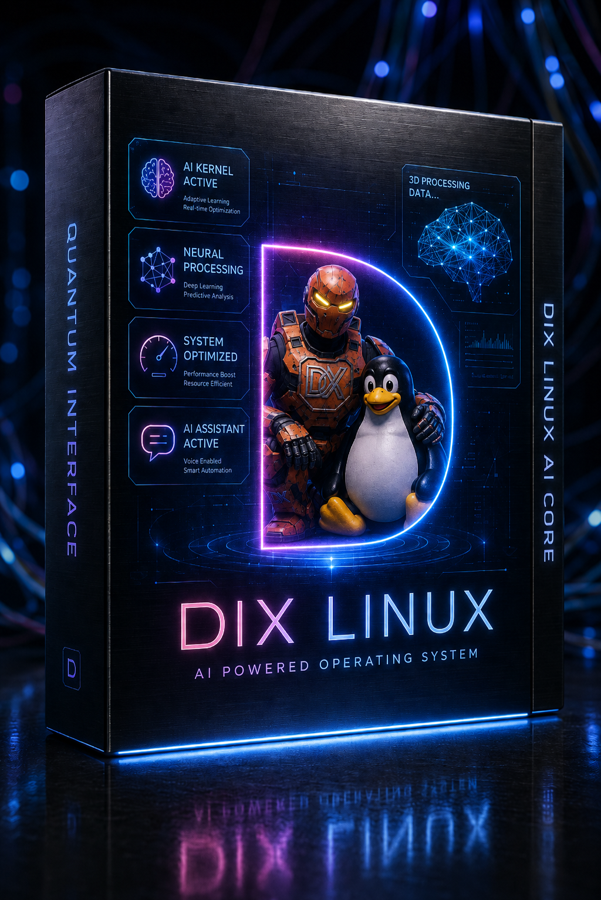
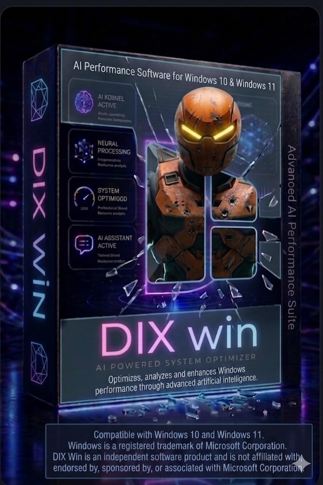

INITIALIZING DIX SYSTEM...
DIX scans real system data. Claude AI analyzes a hardware snapshot and proposes validated optimizations. Internal DIX score, single test machine: 34 → 91.
Select your hardware profile for an estimated DIX internal score range. Actual results depend on your real system parameters.
One platform. Multiple tools. Each one solving a specific performance problem.


No manual tuning. DIX scans your system, sends a real hardware snapshot to Claude AI, and applies validated proposals through a policy engine.
/proc and /sys in real time. CPU governor, I/O scheduler, memory pressure, NUMA state, hugepages. No guesswork.pkexec. Every parameter change is snapshotted first. One click to revert if needed.Single internal test system: Intel i5-12400 + RTX 3060 + 32 GB DDR4 — Ubuntu 26.04. Methodology pending publication.
Results vary by hardware and configuration. The DIX score is an internal optimization metric — not a universal benchmark or guaranteed performance result.
Planned opt-in telemetry for future recommendations. Backend and privacy review pending before public rollout.
| # | Hardware | Distro | Before | After | Gain |
|---|---|---|---|---|---|
| Demo | i9-13900K 64GB | Arch | — | — | — |
| Demo | Ryzen 9 7950X | Ubuntu | — | — | — |
| Demo | i7-11800H 32GB | Fedora | — | — | — |
| Demo | Ryzen 7 5800X | Debian | — | — | — |
| Demo | i5-12400 32GB | Ubuntu | — | — | — |
Versioned, dated, honest. No vaporware.
We know what you're looking for. Here it is.
strings ./dix | grep sk-ant.~/.config/dix/snapshot.json. One click to revert exactly.Launch week: we're giving away 20 lifetime DIX licenses (Linux or Windows). No purchase necessary — just try the free demo and tell us.
Loading entries…
20 winners, launch week only — picked with a public random draw if needed. Full terms here.